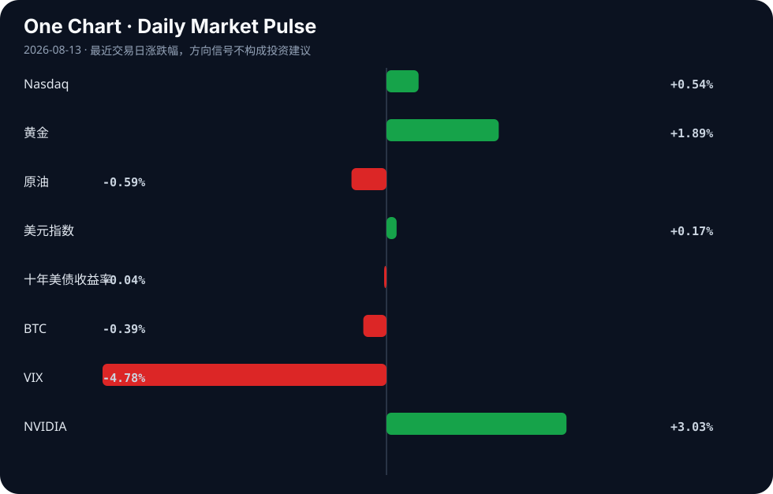

Daily Intelligence
2026-08-13｜Thursday
Today’s Thesis｜今日一句话
AI 的竞争正在从“谁能做出更强模型”转向“谁能把 AI 嵌进组织流程、责任链和资本链”，而今天的信号显示，落地阻力、治理需求与资金通道正在同时上升 [A1][A16][A19][A20]。
① Executive Summary｜30 秒
1. AI： 日本企业尚未全面拥抱 AI 的调查结果，说明“技术可用”与“组织采用”之间仍有显著鸿沟；这意味着短期 AI 价值更多取决于流程重构，而非单纯模型能力 [A1]。
2. 商业： 机器人“电子皮肤”与物理 AI 需求扩散的消息，指向硬件侧正在从演示走向更细分的工业场景，AI 价值链开始从软件外溢到传感、制造与系统集成 [B1][B11]。
3. 宏观： 市场同时呈现“股市与 AI 龙头偏强、黄金与美元也偏强”的组合，这更像是风险偏好改善与对冲需求并存，而不是单一方向的明确再定价 [Market Table]。
② AI Daily
1）日本企业 AI 采用仍未全面展开 [A1]
What Happened
Reuters 调查显示，日本企业“强多数”仍未完全拥抱 AI [A1]。材料没有给出具体比例、行业分布或采用细节，因此只能确认这是一个“普遍滞后”的信号，而不能延伸出更细的全国行业画像 [A1]。
Why It Matters
这条信息的重要性不在于“AI 很热”，而在于它暴露了采用曲线的核心瓶颈：技术供给并不自动转化为组织吸收。换言之，AI 的边际收益并不只由模型性能决定，还取决于流程改造、数据治理、权限分配与责任归属。若企业没有完成这些配套环节，AI 就会停留在试点层面 [A1]。
Second-order Effect
当“是否采用 AI”变成组织结构问题，市场关注点会从算力与模型转向咨询、系统集成、工作流工具、审计与合规。A1 所反映的不是单点落后，而是一个更大的机制：AI 越强，组织越需要重新定义人机分工；分工越难，落地越慢；落地越慢，资本越倾向押注能减少整合摩擦的中间层服务。
2）AI 智能体治理开始前移 [A16][A20]
What Happened
材料显示，英伟达、思科等 120 家组织提议建立 AI 智能体事故追踪机制；同时，情报体系 CIO 们警告自主 AI 智能体正在重塑网络威胁格局 [A16][A20]。这两条信息共同指向同一件事：AI 智能体不再只是“能力展示”，而是被视为需要事故记录、责任追踪与安全治理的对象 [A16][A20]。
Why It Matters
这说明行业的关注重心正在从“能不能自动化”转向“自动化之后如何控制后果”。一旦智能体能够执行动作、调用工具、跨系统操作，风险不再只是输出错误，而是行为错误。治理需求因此前移：不是出事后修补，而是在系统设计阶段就加入追踪、归因和约束 [A16][A20]。
Second-order Effect
治理会反过来塑造产品架构：日志、审计、权限分层、回滚机制和安全沙箱将变成默认功能，而不是可选附件。A1 的组织采用迟缓与 A16/A20 的治理前移之间，形成一个典型反馈环：越想大规模部署，越必须先把事故责任说清；越强调责任，部署速度越可能先慢后快，形成“先阻后通”的采用路径。
3）AI 创业与基础设施信号分化 [A2][A17][A19]
What Happened
Hacker News 出现“AI agent 买卖服务的市场”概念帖，而 Reuters 同时报道 Cerebras 因业绩未达预期股价大跌 16% [A2][A17]。另有关于华尔街与 Nvidia 构建“另类资金管道”支撑 AI 热潮的报道标题出现 [A19]。
Why It Matters
这组材料显示，AI 生态正在同时经历两种相反力量：一边是“更抽象的交易与代理协作设想”，另一边是“更现实的盈利验证压力” [A2][A17][A19]。前者说明想象空间仍在扩张，后者说明资本市场开始要求基础设施公司证明收入质量与兑现速度。也就是说，AI 叙事并没有消失，但估值的耐心正在被财务结果重新校准。
Second-order Effect
如果“agent-to-agent”市场真的形成，它可能会把软件采购、服务分发和结算方式重写为机器可读规则；但与此同时，像 Cerebras 这样的公司若不能持续满足业绩预期，市场会区分“AI 话题”与“AI 盈利”。A2 → A19 → A17 这条链条说明：想象力推动资金流向，资金再倒逼财务验证，验证不及预期时，叙事溢价会迅速收缩。
③ Business Daily
科技：物理 AI 与人机触感继续下沉 [B1][B11]
“电子皮肤”让机器人更接近人类触觉，而 Q2 2026 机器人财报被解读为物理 AI 需求在扩散 [B1][B11]。这意味着市场关注点正在从“看得见的生成式 AI”转向“摸得到的实体 AI”。这里的关键不是概念更新，而是商业边界变化：当 AI 要进入仓储、制造、医疗辅助或复杂设备操作时，传感器、材料、控制系统与系统集成的价值占比会上升 [B1][B11]。
金融：资金通道与风险定价同时变化 [A19][B9][B14]
关于 AI 热潮的“资金管道”标题，以及尼日利亚央行放松银行交易外汇和国债的借贷规则、SMFG 股价上涨等信号，共同说明金融体系仍在寻找承接实体与主题投资的方式 [A19][B9][B14]。这类材料的共同点是：资金并未停滞，而是在寻找更适合的套利、做市和配置路径。需要强调的是，标题层面的“放松”“上涨”并不自动等于趋势确认，仍需回到原文验证政策细节和市场持续性 [B9][B14]。
能源：金价与油价分化，反映风险与通胀的双重定价 [B3][Market Table]
黄金相关标题提示市场仍在讨论降息/通胀/避险的组合，而当天表格中黄金上涨、原油回落，显示市场对“对冲需求”和“通胀压力”的定价并不一致 [B3][Market Table]。这类分化通常意味着投资者并非只在押注单一宏观路径，而是在对冲多个尾部情景。
制造/工业：产业竞争力正在被重排 [B20][B5]
“亚太制造竞争力的六大变化”和非洲自建太阳能工厂的消息，都在说明制造业不再只是成本竞争，而是电力、供应链、技能与本地化能力的综合竞争 [B20][B5]。这类变化的共性是：产业升级越来越依赖基础设施能否稳定供给，而不是单个工厂的效率优化。
④ Macro Observation｜机制分析
世界正在发生什么？ 从材料看，全球同时出现三条线：一是 AI 从模型能力转向组织落地与治理；二是实体产业开始吸收 AI，尤其是机器人和传感器方向；三是市场在增长、避险与通胀对冲之间并行定价 [A1][A16][B1][B11][Market Table]。
为什么发生？ 原因不在于“AI 热度上升”这么简单，而在于技术进入部署阶段后，摩擦成本迅速显性化。企业一旦尝试把 AI 接入流程，就必须处理权限、责任、数据、合规和异常处置；智能体越自动，治理越重要 [A1][A16][A20]。与此同时，物理 AI 的价值链更长，落地会把传感、制造、维护和集成一起拉进来 [B1][B11]。
资本如何流动？ 资本正在从“纯叙事”向“可验证现金流”与“可嵌入流程”的方向再分配。AI 基础设施仍有资金关注，但市场也在区分业绩兑现能力；另一方面，黄金、美元、纳指、VIX 的同时变化表明，资金并非单边冒险，而是在风险偏好改善的同时保留对冲仓位 [A17][A19][Market Table]。
接下来关注什么？ 核心不是下一条 AI 新闻，而是三种验证：第一，企业采用是否从试点变成流程化；第二，智能体治理是否变成行业默认标准；第三，物理 AI 是否从概念扩散到可持续收入。若这些验证成立，今天看到的不是短期热度，而是 AI 产业从“生成能力”向“组织基础设施”迁移的早期阶段；若验证失败，则说明当前更多仍是叙事先行、落地滞后 [A1][A16][B11]。
⑤ Signal Dashboard
| 指标 | 最新值 | 今日 | 信号 |
|---|---|---|---|
| Nasdaq | 26,588.49 | ↑ +0.54% | 风险偏好改善 |
| 黄金 | 4,465.80 | ↑ +1.89% | 避险/通胀对冲增强 |
| 原油 | 82.71 | ↓ -0.59% | 通胀压力缓解 |
| 美元指数 | 99.98 | ↑ +0.17% | 金融条件偏紧 |
| 十年美债收益率 | 4.68 | → -0.04% | 中性 |
| BTC | 63,306.01 | ↓ -0.39% | 风险偏好降温 |
| VIX | 14.55 | ↓ -4.78% | 风险偏好改善 |
| NVIDIA | 224.09 | ↑ +3.03% | 风险偏好改善 |
⑥ Deep Insight
一个容易被忽略的视角是：AI 竞争的下一阶段，真正稀缺的未必是更强的模型，而是“可被组织接受的失败率”。今天的材料里，日本企业尚未全面拥抱 AI [A1]，不是因为它们没看到收益，而是因为一旦 AI 进入真实流程，错误就不再只是技术噪声，而会变成管理、审计、法律和声誉问题。与此同时，行业又在推动智能体事故追踪机制 [A16]，情报系统也开始把自主智能体视为新的威胁源 [A20]。这说明市场正在把 AI 从“能力工具”升级为“责任系统”来处理。 非共识之处在于：很多人会把这解读为落地受阻，但更准确的说法是，落地标准正在抬升。过去软件时代，企业可以容忍一定程度的试错；而当 AI 能执行动作、调用接口、影响资金和供应链时，容错率必须被制度化压缩。于是，真正会受益的，不一定只是最会写模型的公司，而是能把验证、追踪、权限、回滚和合规封装成标准件的公司。A1 与 A16/A20 共同指向一个机制：不是 AI 先大规模渗透再补治理，而是治理先成为采用门槛，随后才是规模化。 反方观点是：市场最终会优先奖赏性能和成本，治理只是短期摩擦，长期会被平台化解决。这个观点并非没有道理，因为一旦工具链成熟，治理成本会下降，采用速度可能重新加快。证伪条件也很明确：如果未来 1—2 个季度内，企业 AI 采购和智能体部署并未明显受到审计、事故和合规要求拖累，且收入快速增长来自少数基础设施公司而非治理型中间层，那么“责任系统成为核心瓶颈”的判断就需要修正。反过来，如果更多企业开始把事故记录、权限分层和验证流程列为采购前提，那么今天的信号就意味着 AI 正进入一个更慢、更稳、也更难被忽视的制度化阶段。
⑦ Tomorrow Watch
1. 关注 Reuters 是否发布更多关于日本企业 AI 采用障碍的细分信息 [A1]。
2. 验证 AI 智能体事故追踪机制的提议是否出现更具体的实施框架或成员扩展 [A16]。
3. 追踪 Cerebras 业绩后续解读是否延续“AI 基础设施估值分化”主题 [A17]。
4. 比较机器人与物理 AI 相关公司是否继续出现“需求扩散”的新表述或财报更新 [B11]。
5. 关注市场是否延续“黄金与纳指同强、BTC偏弱”的分化格局 [Market Table]。
⑧ One Chart

这张图反映的是同一交易窗口内不同资产的方向差异：风险资产、避险资产与美元并未整齐同向 [Market Table]。它更像是在提示市场处于多重叙事并存的状态，而不是单一宏观预期的完全胜出。
⑨ Quote of the Day
“The biggest risk is not taking any risk.”
— Mark Zuckerberg
中文理解：在快速变化的系统里，完全不承担风险本身也可能是最大的风险。
Why it matters today：这句话不是装饰，而是今天观察 AI、商业和宏观变化时的一个思考框架：先看机制，再看价格；先看约束，再看叙事。
⑩ Action Items｜今天值得思考什么
1. 关注 AI 落地最先卡住的是技术、流程还是责任边界。
2. 验证 智能体治理是否会从倡议走向采购标准。
3. 比较 物理 AI 与纯软件 AI 的商业化路径差异。
4. 追踪 市场是否继续呈现“风险偏好与避险并存”的结构。
5. 思考 当失败率必须被制度化管理时，谁会成为新的基础设施层。
信息边界
本文仅使用用户提供的 Reuters、Hacker News、Google News 聚合标题/摘要及市场表格数据。由于多条新闻为二手聚合，正文判断中凡涉及具体机制与行业含义，均应回到原始报道核验。市场数据仅反映所给出的最近交易日快照，不代表实时行情；未提供具体日期对应的完整盘中背景，因此有关趋势的表述仅限于材料内可见信号。
Sources
AI
- A1：Strong majority of Japanese firms have yet to fully embrace AI: Reuters poll - Reuters — Google News · AI
- A2：Show HN: A marketplace where AI agents buy services from AI agents — Hacker News · AI
- A16：英伟达、思科等120家组织提议建立AI智能体事故追踪机制 - 新浪财经 — Google News · AI 中文
- A17：Cerebras shares plummet 16% after results fail to impress investors - Reuters — Google News · AI
- A19：Why Wall Street and Nvidia Are Building an Exotic Money Pipeline for the AI Boom — Hacker News · AI
- A20：Intelligence Community CIOs Warn Autonomous AI Agents Are Reshaping Cyber Threat Landscape - ExecutiveGov — Google News · AI
Business & Macro
- B1：Electronic skin brings robots one step closer to human touch - Digital Journal — Google News · Technology Business
- B3：Where gold price is headed next as Fed rate hike and inflation odds change direction - CNBC — Google News · Markets Policy
- B5：African nations bet on homegrown solar factories to cut blackouts and create jobs - The Cool Down — Google News · Technology Business
- B9：CBN relaxes borrowing rules for banks trading FX, government securities - Punch Newspapers — Google News · Markets Policy
- B11：Q2 2026 Robotics Earnings Show Physical AI Demand Broadening - ETF Database — Google News · Technology Business
- B14：Sumitomo Mitsui Financial Group Inc Stock (SMFG) Moved Up by 3.82% on Aug 12: A Full Analysis - TradingKey — Google News · Markets Policy
- B20：Six shifts reshaping Asia-Pacific’s industrial competitiveness - TyN Magazine — Google News · Global Economy